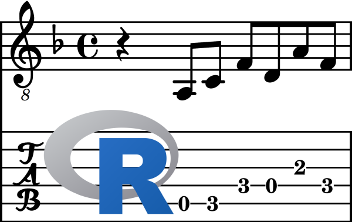

Create guitar tablature (“tabs”) from R code with tabr. The tabr package provides programmatic music notation and a wrapper around LilyPond for creating quality guitar tablature.
tabr offers functions for describing and organizing musical structures and a wraps around the LilyPond backend. LilyPond is an open source music engraving program for generating high quality sheet music based on markup syntax. tabr generates files following the LilyPond markup syntax to be subsequently processed by LilyPond into sheet music.
A standalone LilyPond (.ly) file can be created or the package can make a system call to LilyPond directly to render the guitar tablature output (pdf or png). While LilyPond caters to sheet music in general, tabr is focused on leveraging it specifically for creating quality guitar tablature.
Note: tabr has been tested only on Windows so far. It has not been generalized to Linux and Mac operating systems yet.
Installation
You can install tabr from GitHub with:
# install.packages('devtools')
devtools::install_github("leonawicz/tabr")Basic example
As a brief example, recreate the tablature shown in the tabr logo. Here are the steps.
- Define a musical phrase with
phraseor the shorthand aliasp. - Add the phrase to a
track. - Add the track to a
score. - Render the score to pdf with
tab.
Constructing a musical phrase
A phrase here does not require a strict definition. Think of it as the smallest piece of musical structure you intend to string together. The first argument to phrase is a string describing notes of a specific pitch (or rests: “r”), separated in time by spaces. For chords, just remove spaces to indicate simultaneous notes. Integers are appended to indicate the octave number so that the pitch is unique. For example, a rest followed by a sequence of notes might be given by notes = "r a2 c3 f3 d3 a3 f3".
The second argument is a similar string giving note metadata. In this example there is nothing to add but the time durations. Whole notes taking up an entire measure of music are given by 1, half notes by 2, quarter notes 4, eighth notes 8, and so on. To specify a quarter note rest followed by a sequence of eighth notes, use info = "4 8 8 8 8 8 8". This basic example does not require specifying additional note information such as dotted notes for different fractions of time, staccato notes, ties/slurs, slides, bends, hammer ons and pull offs, etc. These specifications are currently available in tabr to varying degrees of development and are covered in the vignette tutorials.
The third argument, string, is optional but generally important for guitar tablature. In similar format, it specifies the strings of the guitar on which notes are played. Providing this information fixes the fret-string combinations so that LilyPond does not have to guess what position on the neck of the guitar to play a specific note. An inability to specify this in various tablature notation software (or laziness by the user), is a common cause of inaccurate tabs scouring the internet, where even when the notes are correct they are written in the tab suggesting they be played in positions no one would sensibly use. Note that the x shown below is just a placeholder indicating no need to specify a string for the quarter note rest.
Score metadata and accessing LilyPond
Finally, specify some song metadata to reproduce the original staff: the key of D minor, common time, and the tempo. If LilyPond is installed on your system and added to your system PATH variable, tab should call it successfully. Alternatively, it can be added explicitly by calling tabr_options. An example of this is commented out below.
R code
library(tabr)
# path <- 'C:/Program Files (x86)/LilyPond/usr/bin/lilypond.exe'
# tabr_options(lilypond = path)
p1 <- p("r a2 c3 f3 d3 a3 f3", "4 8 8 8 8 8 8", "x 5 5 4 4 3 4")
track1 <- track(p1)
song <- score(track1)
tab(song, "phrase.pdf", key = "dm", time = "4/4", tempo = "4 = 120")#> #### Engraving score to phrase.pdf ####
#> GNU LilyPond 2.18.2
#> Processing `./phrase.ly'
#> Parsing...
#> Interpreting music...
#> Preprocessing graphical objects...
#> Interpreting music...
#> MIDI output to `./phrase.mid'...
#> Finding the ideal number of pages...
#> Fitting music on 1 page...
#> Drawing systems...
#> Layout output to `./phrase.ps'...
#> Converting to `./phrase.pdf'...
#> Success: compilation successfully completedContext and caveats
The tabr package is in early development. Breaking changes could occur in a later version. Many capabilities are missing. Others are incompletely implemented. Others in the R developer community who are probably much better musicians than myself are welcome to contribute. This is the type of package that will only develop in response to specific needs of its contributor(s). With so much yet to be developed around the basics that are already in place, some edge cases seem far down the road and I have not given thought to them. For example, tabr assumes standard guitar tuning. It has no ability to recognize or handle non-standard tunings or instruments like bass with a different number of strings. This type of development excursion is not a priority and would make sense to consider after tabr has become a bit more robust.
I am not an expert in music theory, or in music notation and transcription, or in LilyPond. In fact, my skill in music notation is ironically low enough that I do not find it any more challenging or an impediment to describe a song in R code rather than to just tab it out by hand. The main intent with tabr, however, is simply to be able to generate markup files that LilyPond accepts and understands, without having to write that markup directly.
A major part of the motivation for tabr is the desire for high quality guitar tablature, as produced by LilyPond. Using LilyPond for high quality sheet music and tablature creates an entry point to programmatic music notation as opposed to reliance on various GUI-based programs. While I have not personally used every GUI-based music notation software available, I have found that they tend to have a lot of limitations. Some of them also produce sheet music that looks unprofessional when compared to LilyPond-engraved sheet music. LilyPond, generally speaking, offers the ability to engrave exactly what you want, as long as you know how to provide the markup syntax. Like R, it is also open source.
Finally, there are nonetheless limitations to LilyPond itself. It has been developed for sheet music in general and guitar tablature features were added as a relative afterthought. There are plenty of features I have not yet developed R wrappers around. Then there are other features like string bending that are technically available, but not fully developed yet on the LilyPond side either. Case in point, LilyPond’s bend engraver is still under development; specifying something as common as a bend-release-pull-off is, to put it mildly, challenging.